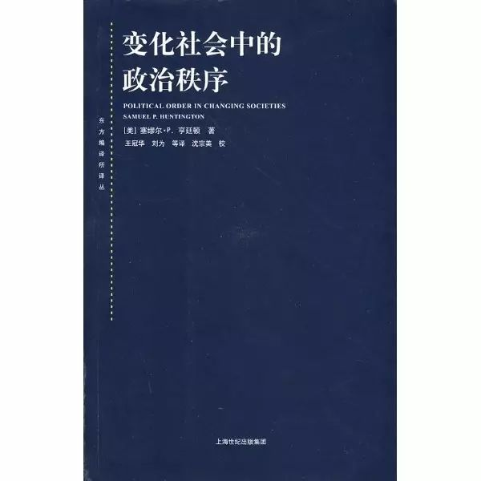
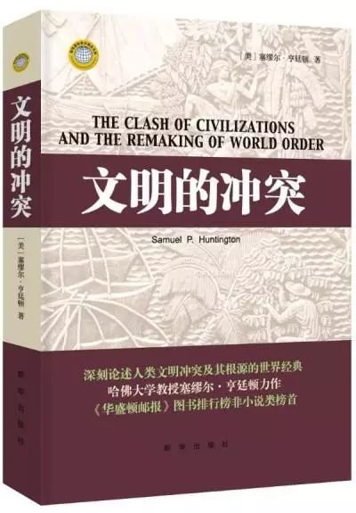

收录于合集 #学人小传 10个
导语： 近来，美国已故政治学巨擘亨廷顿的两本大作The Soldier and the State：The Theory and Politics of Civil—Military Relations与American Politics：The Promise of Disharmony分别在中国大陆首版和再版，由此，这名政治学大师挑起的论战再次被热议。结合其主要著作，本期学术小传将梳理亨廷顿的学术生涯及其作品。
今年五月，美国著名战略家、政治学家布热津斯基西去，再者已经辞世十年的“冷战之父”乔治·凯南 的日记中文版去年在华出版，两位战略家的研究重新成为学术界的热议话题。对此，有人指出，在当今波云诡谲的世界政治中，战后美国最具影响力的保守主义一代已经远去。诚然，布氏和凯南作为美国政府对外政策决策的参与者，影响颇大，但是在学界的贡献则远不及他们同时代的人物——塞缪尔·亨廷顿。
与布氏和凯南一样，亨廷顿也曾于上世纪70年代和80年代分别在卡特政府的国家安全委员会和美国长程整合与战略委员会任职。但是相比他的从政履历，其学术研究更值得大书特书。作为20世纪战后最伟大的保守主义政治学家之一，亨廷顿的一身充满了传奇色彩。他先后负笈于耶鲁大学、芝加哥大学和哈佛大学，并且在23岁取得政治学博士学位，有“政治学神童”之美誉。但是天才的人生往往也伴随着不幸，亨廷顿在学业上表现出色的代价是严重的健康赤字，在撰写博士论文期间罹患从此困扰一生的糖尿病。
在博士毕业之后，亨廷顿便留校任教。除却中间短暂的5年任教哥伦比亚大学外，其将全部的学术生涯都奉献给了哈佛。亨氏一生著作颇丰，其研究领域横跨行政管理、美国政治、比较政治、外交学和国际政治，代表作有《军人与国家：军政关系的理论与政治》（1951）、《变化社会中的政治秩序》（1968）、《美国政治：失衡的承诺》（1981）、《第三波：20世纪后期的民主化浪潮》（1991）、《文明的冲突与世界秩序的重建》（1996）以及晚年著作《我们是谁：美国国家特性面临的挑战》（2004）。除此之外，还有与克罗齐和绵贯让治合作的《民主的危机——就民主国家的统治能力，写给三边委员会的报告》（1975）以及和琼·纳尔逊（Joan M. Nelson）合著的《难以抉择——发展中的政治参与》。尽管其研究领域不断转换，但其思想内核却是一以贯之，那便是实用主义哲学和“情境保守主义”。
一、 保守主义的发端：军政理论的建构与转向
从个人背景上来说，亨廷顿的保守主义思想萌发于冷战时期。在这之前，由于罗斯福新政的成功实施和民主党的长期执政，推崇民主和公平的自由主义意识形态在美国社会居主导地位。亨廷顿曾表示，“我们都是自由主义者，富兰克林·罗斯福就是上帝。”而在1957年，亨廷顿两部作品的问世标志着他保守主义思想的发端。
首先，在《美国政治科学评论》上发表的《作为一种意识形态的保守主义》一文中，亨廷顿对三种意识形态——保守主义、自由主义和社会主义的区别做了详尽的论述。关于自由主义与保守主义的争论几乎贯穿美国建国至今的历史，从未停息。与主张民主的自由主义相比，保守主义恰好保守的是美国建国期间的个人自由信条。与正统的保守主义者不同的是，亨廷顿强调的是情境的（situational）保守主义而非教条的（doctrinal）保守主义。因此，当固有的社会制度和政治秩序受到外在的挑战和威胁时，情境保守主义就会应运而生。正因为如此，即便是以民主形式组织的政体其统治能力才是首位的。同时，亨廷顿对发展中秩序和稳定的关注深受基督教神学家尼布尔人性恶和原罪的神学思想的影响。在继承并坚持一种少数精英统治的民主观后，当面临政治自由和政治参与扩大进而可能引发风险时，亨廷顿才会主张“有限的民主”，主张通过限制自由来保障自由，通过限制群众参与来保障民主制度与政治秩序。在他看来，“我们现在最迫切需要的不是创造更多的自由主义制度而是能成功地保守那些已经存在的制度。这种制度要求自由主义者们为了应对持续的威胁而接受保守主义的价值暂时搁置他们的意识形态。只有当下暂时放弃他们的自由主义思想，自由主义者才能将来成功地捍卫自由主义制度。”
其次是作为亨氏的处女作的专著《军人与国家：军政关系的理论与政治》出版。在这部作品中，亨氏描述了军人与政治家特别是文官之间的张力，并将根源归于军人的专业主义本质。他将军人心态（military mind）描述为保守的现实主义的和悲观的人类本质，提出客观统制（objective control）作为军政关系最合适的形式。美国对军队与社会关系的态度变化，反映战后从19世纪自由主义向新保守主义的转变。
揆诸历史，德国在全民尚武好战的氛围中巩固了军事专业主义，但却于一战中失去戒惧克制，在战后又卷入魏玛共和国政治斗争并最终为纳粹所吞噬。而在日本，毫无专业主义精神的军人利用军事权的独立持续干预着政治与外交。而在19世纪以自由主义立国的美国，思想脉络中一直存在着和平思潮。但美国的理想主义又总是将每场战争都视为圣战，不是为了特定的国家安全目标而战，而是为了诸如民主、民族自决、公海自由航行等抽象原则而战。自由主义还敌视军事专业主义，认为是自由民主威胁，军事防卫和投票一样是每个公民的责任，不能仅由一个独特的小团体来做代表。这使得军事专业主义和美国的社会氛围、政治体制难以相容。但是这反过来隔离了军队使其难以问政，经过南北战争的洗礼以及谢尔曼确立的政治中立传统，进一步规训军人远离政治，到一战基本建立了专业主义模式；忠诚地服务于任何执政的政府或政党，成为军人团体的最终目标。
而在二战期间，参谋长联席会议逐渐形成全面指挥战争的最重要的力量，由于在战争指挥上的突出地位，军人活动的层次及范围远远超过一个纯粹的专业团体。战争赋予他们参政的政治传统与角色，由此引发的参联会、总统、国会、其他文官之间的军政冲突随之出现。对此，亨廷顿认为平衡美国的军政关系，缓解军事安全需求与美国自由主义价值两者间的紧张关系，终究只能藉由安全威胁的降低，以及自由主义意识的削弱来纾解。而在二战后逐渐兴起的新保守主义强调接受现存体制、批评乌托邦主义，使军事专业主义归位成为可能，保守主义是为了保守自由主义的成果，只有在同情保守主义的环境里，才能将自由主义传统与军事专业主义连接起来。
二、保守主义的流变之“权威与秩序下的民主”
如果说50年代的亨廷顿因为对美国政治特别是军政关系的探讨而声名鹊起，那么1968年出版的《变化社会中的政治秩序》就是奠定他在政治学界不朽地位的基石。在此之前，他于1965年在《世界政治》期刊上发表的论文《政治发展与政治衰朽》已经较为详细地阐述了相关观点。

在亨廷顿看来，所谓“政治稳定促进经济发展，而经济发展又促进政治稳定”的想法毕竟图样，有关动荡、腐败、威权主义、国内暴力、制度衰败及政治崩溃的理论才能够解释这些发展中国家的现状。亨廷顿认为社会—经济的现代化往往同政治的风险并存，现代化不必然产生新的政治秩序，社会经济发展导致社会动员和政治参与的扩大，而与之相应的政治上的组织化和制度化却停滞不前，当政治参与的扩大超出政治制度的承受范围就会产生体制过载的现象，出现“参与内爆”乃至政治秩序全面崩溃的乱象，进而导致政治衰朽。因此，理解不同国家的发展模式还需从各国自身的文化出发，但是从欧洲先发国家的经验也可以汲取一条发展经验，那便是权威——秩序——发展。在其中，政治组织的重要性不言而喻，它是“政治稳定的基础和政治自由的前提”。因此，“身处正在实现现代化之中的当今世界，谁能组织政治，谁就能掌握未来”。同样的是，我们认为福山这五年反复倡导实现现代政治秩序需要的强国家——法治——民主问责制的所谓“制度三支柱”并没有特别多的理论创新与贡献，在本质上是回到亨廷顿的这一分析性框架当中。链接：杨光斌、杨端程：《回到亨廷顿的福山——从保守主义到保守的自由主义》
如果说亨廷顿在《变化》一书中是基于对广大发展中国家现状的了解，那么在1975年和1981年两本著作中，亨廷顿便直面美国的现状，描述了美国信念政治与现实政治之间的张力。自20世纪60年代起，美国经济面临通货膨胀，财政赤字急剧增长，在国外又陷入越南战争的泥潭，民众对政府的信心一再下降。国内的反战、反种族歧视和要求性别平等的呼声日益高涨，社会矛盾也进一步激化。亨廷顿指出，由于“民主本身在教育水平高、积极性高和参与能力强的社会中的内在动态引起的”，因此美国民主政府的威胁主要不在外部，而是在于内部，美国统治面临的问题也是民主过剩和民主泛滥引起的。他指出美国人对洛克哲学的信奉导致对政府能力和政府权力的混淆，而没有探索出如何设计一个具备有效权力和权威的政治体系。同时，美国人信奉的政治理念与缔造的政治体制之间存在严重的裂痕，呈现出“美国反对美国”的状态。为此，美国人越是坚信政治信念，就会越发对自身的政治体制感到不满。为此，他提出民主首要解决的是统治能力的问题，以保证民主在更为平衡的情况下存在。
三、保守主义的流变之“民主化的扩散”
在1991年出版的《第三波》一书里，亨廷顿在坚持“稳定性是分析任何政治体制的一个核心维度”这一前提下详述了民主化的内外肇因，不仅区分了主动转变、政权取代以及交相改变三种形式的民主转型过程，而且也暗示民主化使得不同政府“你方唱罢我登场”成为可能，由此可能带来政策失灵与理想破灭的后果。即便如此，这部著作的整体基调还是略显乐观，亨廷顿在书末更是直指民主化乃世界政治大势所趋。因为经济发展使得民主成为可能，政治领导将会使民主成为现实。面对未来，他乐观地估计到“在正在兴起的经济发展大潮的支持与推动下，每一波民主化浪潮都比前一波浪潮前进得更远，而倒退的更少”。
其实亨廷顿这一观念的转变从1989年亨廷顿的博士生裴敏欣对其的采访中也可窥见端倪。在访谈中，亨廷顿从实用主义的角度出发，指出当时采纳权威主义制度只是暂时的权宜之计，因为除非现行的制度是比它更恶劣的极权主义制度。他认为，比较历史研究的结果表明实行权威主义在一段时间内促进当事国和地区的经济发展成效卓著，中国台湾、韩国、巴西、西班牙等国即是明证。但是如果执政当局实行权威主义仅仅是为了促进经济增长而不是有效开放政治制度和扩大政治参与的话，将是极其危险的。他举例说，虽然伊朗的巴列维王朝也采取了一系列改革措施推动了经济的增长，但是没有进行有效的政治改革来开放民众参与政治，依然被霍梅尼领导的伊斯兰革命所推翻。因此长远来看，民主制度将为大部分人接受和喜爱。
四、保守主义的收缩：文明范式下的民主冲突与自我审视
尽管第三波潮流势不可当，但在冷战结束后，亨廷顿并没有像西方的大多数战略家那样被突然到来的胜利冲昏头脑，早在《第三波》成书之时他就暗示新生的民主政权将会不同程度地面临来自内部和外部的挑战，并且有可能遇到如同前两波民主化回潮一样的情况，引发第三波民主化的回潮。
同时，亨廷顿还将20世纪后半期还没有建立起民主政权的国家根据“地缘—文化”的标准，大体划分为四种类型，分别是马克思—列宁主义政权、撒哈拉以南非洲国家、伊斯兰国家和东亚国家，将这些国家民主化的障碍则进一步细分为政治、文化和经济层面的。亨廷顿特别在文化层面做了大量论述，为他在后面的新论奠定了研究基础。
在《第三波》成书后，亨廷顿笔耕不辍，提出了轰动性的“文明冲突论”。对此，多数从事国际政治研究的学者予以了热烈探讨。实际上，“文明冲突论”也是亨廷顿本人从不同文明与文化的角度审视国别间政治发展与分野的思想学说。这一理论起源自他于1993年在《外交事务》杂志上发表的一篇名为《文明的冲突？》的论文。在这篇文章里，亨廷顿将文明作为一种分析范式，表达的核心观点为：在冷战后，世界政治的冲突将不再是意识形态或者政治、经济之间的竞争，而是不同国家和集团之间文明的冲突。下一次世界大战将是不同文明之间的战争。在接下来的3年里，亨廷顿将自身观点汇总整理成了《文明的冲突与世界秩序的重建》一书。在这部著作中，他将世界划分为以西方基督教文明、东正教文明、中华儒家文明、伊斯兰教文明、日本文明、印度文明、拉丁美洲文明以及可能存在的非洲文明为代表的八个文明，认为伴随着冷战的结束和现代化的驱使，人们对国家和意识形态组成的联盟的认同转向对一种对“文化实体”——文明的忠诚。冷战集团让位于以文明为核心作区分的文化社会，不同文明之间的断裂带正在演变为全球政治的冲突带。民主化使得“民主悖论”陷入难以解决的困境，更是引爆“文明冲突”的导火索。在其他文明中，按照美式的民主选举出的政权对美国反而更加敌视。

同时，“文明的冲突”也体现在美国内部的多元文化主义者与西方文明和美国信条维护者之间的冲突上。对此，亨廷顿辩护到，如果我们“摒弃美国信条和西方文明，就意味着我们所认识的美利坚合众国的终结”。亨廷顿既否认在美国国内推行的多元文化主义又否认在国外推行普世主义。在他看来，移民的涌入在促进文化多样性的同时增加了文化的分裂性，增加了社会共识瓦解的可能性从而加剧冲突的风险，而这种风险又难以通过妥协来实现和平的解决。“美国国内的多元文化主义对美国和西方构成了威胁，在国外推行普世主义则对西方和世界构成了威胁”，若要“维护美国和西方，就需要重建西方的认同；维护世界安全，则需要接受全球的多元文化性”。面对在美国国内存在的两股精英力量——世界主义的和帝国的方案。亨廷顿指出，这两种方案都是旨在消除美国与他国之间在社会、政治和文化上的差别。但是问题在于美国公众并不把推广民主作为优先考虑的对外政策目标。因为美国盎格鲁—撒克逊的新教文化和宗教信仰决定了美国和他国的根本区别。美国民众有很深的宗教信仰，这深刻地影响到了他们的国家和身份认同。如果美国成为世界那它就不可能是美国，而其他国家若变得和美国一样，它就不可能是自己。否则美国民众的国家认同和身份特性就会得到削弱，美国也会逐渐迷失自我。
这些论点在当时来看引起颇大争议，但是结合这10多年来的现实重新审视，不难发现亨廷顿在《文明的冲突》和《我们是谁》中画出了21世纪前30年世界政治和美国政治的地图。时至今日，这些伟大的远见和预言恐怕不得不让我们心生敬意。
五、结尾
亨廷顿在哈佛大学政府系执教50余年，直到2007年才荣休。纵观亨氏学术生涯，从写作《军人与国家》到《我们是谁》，其每完成一部著作，所招致的争议和批判便会纷纷而至，有人指责他是威权主义的鼓吹者，有人则从政治科学研究的角度批判了亨氏的经典现代化公式无法证成以及其诸多研究缺乏田野调查得来的一手资料。当“第三波”和“文明的冲突”提出之后，很多人更是批判亨廷顿是在为“美国的民主帝国主义”摇旗呐喊。然而亨廷顿并非鼓吹无限制的推行民主霸权，更非主张西方文明与其他文明互动时只能通过战争来解决分歧，“文明冲突论”更多的是警示和预言，亨氏本人也主张国际秩序应当建立在多样文明的基础之上，这样才是“防止世界大战最可靠的保障”。正是在这个意义上，同为哈佛大学政治学教授的斯蒂芬·沃尔特指出，从某种程度上来讲，以文明的范式来分析冲突的预言是危险的但却是有可能自我实现的：我们越是相信它并把它作为行动的指南，它就越有可能成为现实。
相较于自身在学术创作上旺盛的生命力，亨廷顿的健康状况却江河日下，晚年因糖尿病、心脏病和中风等五劳七伤而逐渐钟鸣漏尽，仅仅在荣休一年后便在2008年的平安夜于麻省葡萄园岛的Windemere护理院与世长辞，享年81岁。
回顾其一生，他出生的时候正是美国资本主义经济大萧条的前夜，而离开的时候正是奥巴马当选总统之时。正如每一个伟大的政治理论家的思想都不同程度的是对这个时代的反映，亨氏自然也不例外，其著作完全可以作为美国政治史不同阶段的缩影，真可谓一部著作便是一个范式，此乃亨廷顿之“变”；同时，尽管亨氏拥有自由主义的心脏和保守主义的大脑，但是他自始至终坚持的是WASP的信条，此之谓亨廷顿之“常”。为此，其弟子扎卡里亚所说，“我从不认为亨廷顿是虚伪和充满恶意的，也从未见到他为了谋取一官半职而牺牲自己的原则。他为他所坚信并珍重的原则——盎格鲁- 新教原则所生，这些原则就是勤勉工作、诚实守信、公平竞争、勇气、忠诚与爱国主义。”
白云苍狗，造化弄人。当老牌自由民主国家因为内部民粹主义和“否决政体”而陷入政治对立，当中亚、西亚和非洲的一些国家濒临土崩瓦解时，针对现代国家建构中的权威、秩序、法治、民主等等一系列经久不衰的热话题，亨廷顿曾经给我们以启示，现在我们是否仍然需要静下心来思考呢？
福山依旧在，历史未终结。不知福山本人在他的近著《政治秩序的起源——从前人类时代到法国大革命》的扉页写上“纪念塞缪尔·亨廷顿”是何种心态。然而斯人已去，思想永恒。去年底笔者有幸聆听到访学院的康奈尔大学政府系徐昕副教授的报告，期间徐老师提及其院系掌门人卡赞斯坦指出要重新审视亨廷顿。世界一流学者尚且能如此认知，那么在世界政治反转的当下，重新理解亨廷顿和他的著作，也是正当其时。
参考文献：
-
[法]米歇尔·克罗齐、[美]塞缪尔·P.亨廷顿、[日]绵贯让治.民主的危机——就民主国家的统治能力，写给三边委员会的报告[M].马殿军等译，北京：求实出版社，1989年版。
-
[美]塞缪尔·亨廷顿、琼·纳尔逊.难以抉择——发展中国家的政治参与[M].汪晓寿等译，北京：华夏出版社，1989年版。
-
[美]塞缪尔·亨廷顿等.现代化:理论与历史经验的再探讨[M].张景明译，上海：上海译文出版社，1993年版。
-
[美]塞缪尔·亨廷顿.失衡的承诺[M].周端译，北京：东方出版社，2005年版。
-
[美]塞缪尔·亨廷顿.我们是谁？——美国国家特性面临的挑战[M].程克雄译，北京：新华出版社，2005年版。
-
[美]塞缪尔·P.亨廷顿.变化社会中的政治秩序[M].王冠华、刘为等译，上海：上海世纪出版集团，2008年版。
-
[美]塞缪尔·亨廷顿.文明的冲突与世界秩序的重建[M].周琪等译，北京：新华出版社，2012年版。
-
[美]塞缪尔·P.亨廷顿.第三波：20世纪后期的民主化浪潮[M].欧阳景根译，北京：中国人民大学出版社，2013年版。
-
[美]塞缪尔·杭廷顿.军人与国家：文武关系的理论与政治[M].洪陆训等译，台北：时英出版社，2006年版
-
孟军.国内外亨廷顿政治发展理论的研究综述[J].中南大学学报（社会科学版），2007（6）
-
王正绪.亨廷顿主要著作及其缺陷[J].开放时代，2009（2）
-
杨光斌、郭伟.亨廷顿的新保守主义思想研究[J].国际政治研究，2004（4）
-
杨光斌、杨端程.回到亨廷顿的福山——从保守主义到保守的自由主义[J].学术界，2017（4）
-
张飞龙.简论塞缪尔·亨廷顿的学术思想[C].李路曲.比较政治学研究（第7辑），北京：中央编译出版社，2014年版。
-
裴敏欣.权威主义说的始作俑者亨廷顿谈权威主义——与哈佛大学政治系博士研究生裴敏欣的对话[N].世界经济导报，1989-03-27，第13版。
-
Huntington,Samuel.1957.“Conservatism as an Ideology”The American Political Science Review, Vol. 51, No. 2.
-
Huntington,Samuel.1965.“Political Development and Political Decay”Word Politics, Vol.17, No.13.
-
Huntington, Samuel.1993.The Clash of Civilizations” Foreign Affairs, Vol.72, No.3.
-
Walt, Stephen .1997.“Building up New Bogeymen” Foreign Policy, No. 106
-
Zakaria,Fareed. 2009.“Samuel Huntington,1927-2008” __ Newsweek (Atlantic Edition), Vol.153,No.2.
**
**
政观编辑部